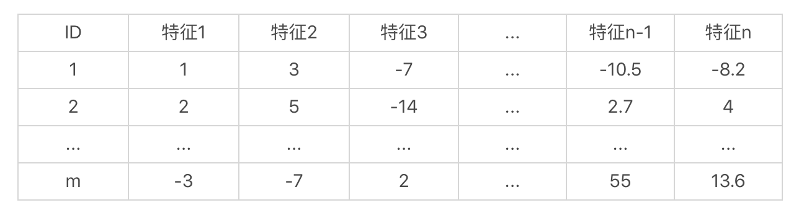
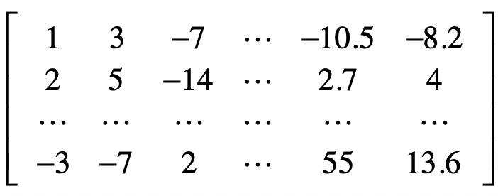
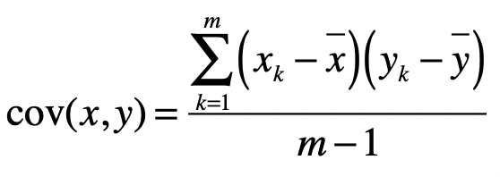
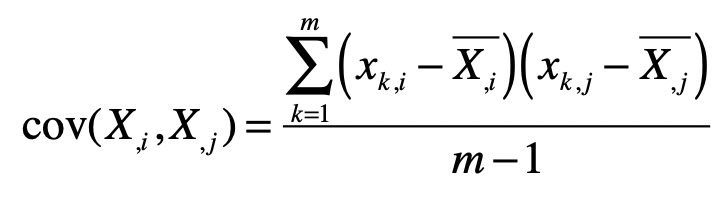
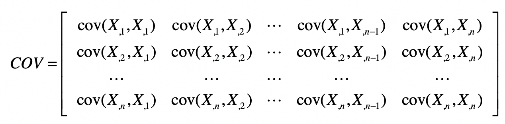
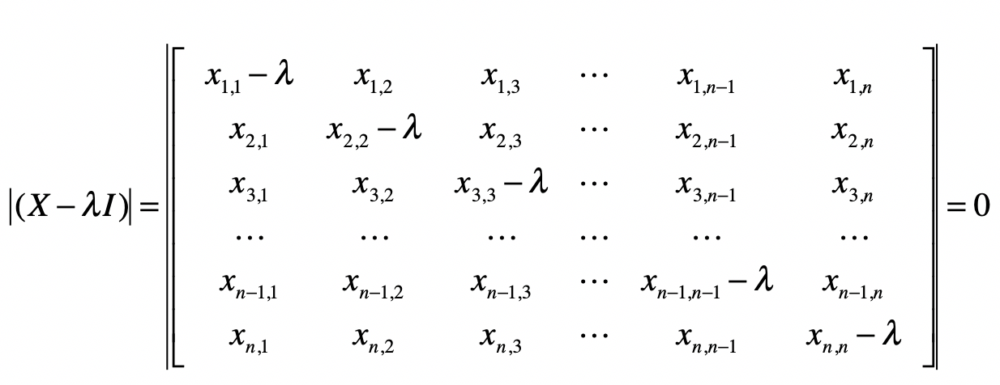
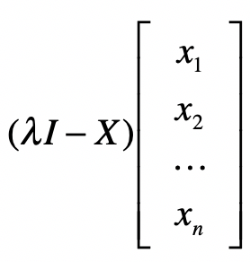

- 01 二进制：不了解计算机的源头，你学什么编程.md
- 02 余数：原来取余操作本身就是个哈希函数.md
- 03 迭代法：不用编程语言的自带函数，你会如何计算平方根？.md
- 04 数学归纳法：如何用数学归纳提升代码的运行效率？.md
- 05 递归（上）：泛化数学归纳，如何将复杂问题简单化？.md
- 06 递归（下）：分而治之，从归并排序到MapReduce.md
- 07 排列：如何让计算机学会“田忌赛马”？.md
- 08 组合：如何让计算机安排世界杯的赛程？.md
- 09 动态规划（上）：如何实现基于编辑距离的查询推荐？.md
- 10 动态规划（下）：如何求得状态转移方程并进行编程实现？.md
- 11 树的深度优先搜索（上）：如何才能高效率地查字典？.md
- 12 树的深度优先搜索（下）：如何才能高效率地查字典？.md
- 13 树的广度优先搜索（上）：人际关系的六度理论是真的吗？.md
- 14 树的广度优先搜索（下）：为什么双向广度优先搜索的效率更高？.md
- 15 从树到图：如何让计算机学会看地图？.md
- 16 时间和空间复杂度（上）：优化性能是否只是“纸上谈兵”？.md
- 17 时间和空间复杂度（下）：如何使用六个法则进行复杂度分析？.md
- 18 总结课：数据结构、编程语句和基础算法体现了哪些数学思想？.md
- 19 概率和统计：编程为什么需要概率和统计？.md
- 20 概率基础（上）：一篇文章帮你理解随机变量、概率分布和期望值.md
- 21 概率基础（下）：联合概率、条件概率和贝叶斯法则，这些概率公式究竟能做什么？.md
- 22 朴素贝叶斯：如何让计算机学会自动分类？.md
- 23 文本分类：如何区分特定类型的新闻？.md
- 24 语言模型：如何使用链式法则和马尔科夫假设简化概率模型？.md
- 25 马尔科夫模型：从PageRank到语音识别，背后是什么模型在支撑？.md
- 26 信息熵：如何通过几个问题，测出你对应的武侠人物？.md
- 27 决策树：信息增益、增益比率和基尼指数的运用.md
- 28 熵、信息增益和卡方：如何寻找关键特征？.md
- 29 归一化和标准化：各种特征如何综合才是最合理的？.md
- 30 统计意义（上）：如何通过显著性检验，判断你的A_B测试结果是不是巧合？.md
- 31 统计意义（下）：如何通过显著性检验，判断你的A_B测试结果是不是巧合？.md
- 32 概率统计篇答疑和总结：为什么会有欠拟合和过拟合？.md
- 33 线性代数：线性代数到底都讲了些什么？.md
- 34 向量空间模型：如何让计算机理解现实事物之间的关系？.md
- 35 文本检索：如何让计算机处理自然语言？.md
- 36 文本聚类：如何过滤冗余的新闻？.md
- 37 矩阵（上）：如何使用矩阵操作进行PageRank计算？.md
- 38 矩阵（下）：如何使用矩阵操作进行协同过滤推荐？.md
- 39 线性回归（上）：如何使用高斯消元求解线性方程组？.md
- 40 线性回归（中）：如何使用最小二乘法进行直线拟合？.md
- 41 线性回归（下）：如何使用最小二乘法进行效果验证？.md
- 42 PCA主成分分析（上）：如何利用协方差矩阵来降维？.md
- 43 PCA主成分分析（下）：为什么要计算协方差矩阵的特征值和特征向量？.md
- 44 奇异值分解：如何挖掘潜在的语义关系？.md
- 45 线性代数篇答疑和总结：矩阵乘法的几何意义是什么？.md
- 46 缓存系统：如何通过哈希表和队列实现高效访问？.md
- 47 搜索引擎（上）：如何通过倒排索引和向量空间模型，打造一个简单的搜索引擎？.md
- 48 搜索引擎（下）：如何通过查询的分类，让电商平台的搜索结果更相关？.md
- 49 推荐系统（上）：如何实现基于相似度的协同过滤？.md
- 50 推荐系统（下）：如何通过SVD分析用户和物品的矩阵？.md
- 51 综合应用篇答疑和总结：如何进行个性化用户画像的设计？.md
- 导读：程序员应该怎么学数学？.md
- 开篇词 作为程序员，为什么你应该学好数学？.md
- 数学专栏课外加餐（一） 我们为什么需要反码和补码？.md
- 数学专栏课外加餐（三）：程序员需要读哪些数学书？.md
- 数学专栏课外加餐（二） 位操作的三个应用实例.md
- 结束语 从数学到编程，本身就是一个很长的链条.md
42 PCA主成分分析（上）：如何利用协方差矩阵来降维？
你好，我是黄申。
在概率统计模块，我详细讲解了如何使用各种统计指标来进行特征的选择，降低用于监督式学习的特征之维度。接下来的几节，我会阐述两种针对数值型特征，更为通用的降维方法，它们是主成分分析PCA（Principal Component Analysis）和奇异值分解SVD（Singular Value Decomposition）。这两种方法是从矩阵分析的角度出发，找出数据分布之间的关系，从而达到降低维度的目的，因此并不需要监督式学习中样本标签和特征之间的关系。
PCA分析法的主要步骤
我们先从主成分分析PCA开始看。
在解释这个方法之前，我先带你快速回顾一下什么是特征的降维。在机器学习领域中，我们要进行大量的特征工程，把物品的特征转换成计算机所能处理的各种数据。通常，我们增加物品的特征，就有可能提升机器学习的效果。可是，随着特征数量不断的增加，特征向量的维度也会不断上升。这不仅会加大机器学习的难度，还会影响最终的准确度。针对这种情形，我们需要过滤掉一些不重要的特征，或者是把某些相关的特征合并起来，最终达到在减少特征维度的同时，尽量保留原始数据所包含的信息。
了解了这些，我们再来看今天要讲解的PCA方法。它的主要步骤其实并不复杂，我一说你就能明白，但是为什么要这么做，你可能并不理解。咱们学习一个概念或者方法，不仅要知道它是什么，还要明白是怎么来的，这样你就能知其然，知其所以然，明白背后的逻辑，达到灵活运用。因此，我先从它的运算步骤入手，给你讲清楚每一步，然后再解释方法背后的核心思想。
和线性回归的案例一样，我们使用一个矩阵来表示数据集。我们假设数据集中有m个样本、n维特征，而这些特征都是数值型的，那么这个集合可以按照如下的方式来展示。

那么这个样本集的矩阵形式就是这样的：

这个矩阵是m×n维的，其中每一行表示一个样本，而每一列表示一维特征。让我们把这个矩阵称作样本矩阵，现在，我们的问题是，能不能通过某种方法，找到一种变换，可以降低这个矩阵的列数，也就是特征的维数，并且尽可能的保留原始数据中有用的信息？
针对这个问题，PCA分析法提出了一种可行的解决方案。它包括了下面这样几个主要的步骤：
标准化样本矩阵中的原始数据；
获取标准化数据的协方差矩阵；
计算协方差矩阵的特征值和特征向量；
依照特征值的大小，挑选主要的特征向量；
生成新的特征。
下面，我们一步步来看。
1.标准化原始数据
之前我们已经介绍过特征标准化，这里我们需要进行同样的处理，才能让每维特征的重要性具有可比性。为了便于你回顾，我把标准化的公式列在了这里。
\(x’=\\frac{x-μ}{σ}\)
其中\(x\)为原始值，\(u\)为均值，\(σ\)为标准差，\(x’\)是变换后的值。需要注意的是，这里标准化的数据是针对同一种特征，也是在同一个特征维度之内。不同维度的特征不能放在一起进行标准化。
2.获取协方差矩阵
首先，我们来看一下什么是协方差（Covariance），以及协方差矩阵。协方差是用于衡量两个变量的总体误差。假设两个变量分别是\(x\)和\(y\)，而它们的采样数量都是\(m\)，那么协方差的计算公式就是如下这种形式：

其中\(x\_k\)表示变量\(x\)的第\(k\)个采样数据，\(\\bar{x}\)表示这\(k\)个采样的平均值。而当两个变量是相同时，协方差就变成了方差。
那么，这里的协方差矩阵又是什么呢？我们刚刚提到了样本矩阵，假设\(X\_{,1}\)表示样本矩阵\(X\)的第\(1\)列，\(X\_{,2}\)表示样本矩阵\(X\)的第\(2\)列，依次类推。而\(cov(X\_{,1},X\_{,1})\)表示第1列向量和自己的协方差，而\(cov(X\_{,1},X\_{,2})\)表示第1列向量和第2列向量之间的协方差。结合之前协方差的定义，我们可以得知：

其中，\(x\_{k,i}\)表示矩阵中第\(k\)行，第\(i\)列的元素。 \(\\bar{X\_{,i}}\)表示第\(i\)列的平均值。
有了这些符号表示，我们就可以生成下面这种协方差矩阵。

从协方差的定义可以看出，\(cov(X\_{,i},X\_{,j})=cov(X\_{,j},X\_{,i})\)，所以\(COV\)是个对称矩阵。另外，我们刚刚提到，对于\(cov(X\_{,i},X\_{,j})\)，如果\(i=j\)，那么\(cov(X\_{,i},X\_{,j})\)也就是\(X\_{,j}\)这组数的方差。所以这个对称矩阵的主对角线上的值就是各维特征的方差。
3.计算协方差矩阵的特征值和特征向量
需要注意的是，这里所说的矩阵的特征向量，和机器学习中的特征向量（Feature Vector）完全是两回事。矩阵的特征值和特征向量是线性代数中两个非常重要的概念。对于一个矩阵\(X\)，如果能找到向量\(v\)和标量\(λ\)，使得下面这个式子成立。
\(Xv=λv\)
那么，我们就说\(v\)是矩阵\(X\)的特征向量，而\(λ\)是矩阵\(X\)的特征值。矩阵的特征向量和特征值可能不止一个。说到这里，你可能会好奇，特征向量和特征值表示什么意思呢？我们为什么要关心这两个概念呢？简单的来说，我们可以把向量\(v\)左乘一个矩阵\(X\)看做对\(v\)进行旋转或拉伸，而这种旋转和拉伸都是由于左乘矩阵\(X\)后，所产生的“运动”所导致的。特征向量\(v\)表示了矩阵\(X\)运动的方向，特征值\(λ\)表示了运动的幅度，这两者结合就能描述左乘矩阵\(X\)所带来的效果，因此被看作矩阵的“特征”。在PCA中的主成分，就是指特征向量，而对应的特征值的大小，就表示这个特征向量或者说主成分的重要程度。特征值越大，重要程度越高，我们要优先现在这个主成分，并利用这个主成分对原始数据进行变换。
如果你还是有些困惑，我会在下面一节，讲解更多的细节。现在，让我们先来看看给定一个矩阵，如何计算它的特征值和特征向量，并完成PCA分析的剩余步骤。我在下面列出了计算特征值的推导过程：
\(Xv=λv\)- \(Xv-λv=0\)- \(Xv-λIv=0\)- \((X-λI)v=0\)
其中I是单位矩阵。对于上面推导中的最后一步，我们需要计算矩阵的行列式。

\((x\_{1,1}-λ)(x\_{2,2}-λ)…(x\_{n,n}-λ)+x\_{1,2}x\_{2,3}…x\_{n-1,n}x\_{n,1}+…)-(x\_{n,1}x\_{n-1,2}…x\_{2,n-1}x\_{1,n})=0\)
最后，通过解这个方程式，我们就能求得各种λ的解，而这些解就是特征值。计算完特征值，我们可以把不同的λ值代入\(λE-A\)，来获取特征向量。

4.挑选主要的特征向量，转换原始数据
假设我们获得了k个特征值和对应的特征向量，那么我们就有：
\(Xv\_1=λ\_1v\_1\)- \(Xv\_2=λ\_2v\_2\)- \(…\)- \(Xv\_k=λ\_kv\_k\)
按照所对应的λ数值的大小，对这k组的v排序。排名靠前的v就是最重要的特征向量。
假设我们只取前k1个最重要的特征，那么我们使用这k1个特征向量，组成一个n×k1维的矩阵D。
把包含原始数据的m×n维矩阵X左乘矩阵D，就能重新获得一个m×k1维的矩阵，达到了降维的目的。
有的时候，我们无法确定k1取多少合适。一种常见的做法是，看前k1个特征值的和占所有特征值总和的百分比。假设一共有10个特征值，总和是100，最大的特征值是80，那么第一大特征值占整个特征值之和的80%，我们认为它能表示80%的信息量，还不够多。那我们就继续看第二大的特征值，它是15，前两个特征值之和有95，占比达到了95%，如果我们认为足够了，那么就可以只选前两大特征值，把原始数据的特征维度从10维降到2维。
小结
这一节，我首先简要地重温了为什么有时候需要进行特征的降维和基于分类标签的特征选择。随后，我引出了和特征选择不同的另一种方法，基于矩阵操作的PCA主成分分析。这种方法的几个主要步骤包括，标准化原始数据、获得不同特征的协方差矩阵、计算协方差矩阵的特征值和特征向量、选择最重要的主成分，以及通过所选择的主成分来转换原始的数据集。
要理解PCA分析法是有一定难度的，主要是因为两点原因：第一，计算的步骤有些复杂。第二，这个方法的核心思路有些抽象。这两点可能会让刚刚接触PCA的学习者，感到无从下手。
为了帮助你更好的理解，下一节，我会使用一个示例的矩阵进行详细的推算，并用两种Python代码进行结果的验证。除此之外，我还会分析几个要点，包括PCA为什么使用协方差矩阵？这个矩阵的特征值和特征向量又表示什么？为什么特征值最大的主成分涵盖最多的信息量？明白了这些，你就能深入理解为什么PCA分析法要有这些步骤，以及每一步都代表什么含义。
思考题
给定这样一个矩阵：

假设这个矩阵的每一列表示一个特征的维度，每一行表示一个样本。请完成
按照列（也就是同一个特征维度）进行标准化。
生成这个矩阵的协方差矩阵。
欢迎留言和我分享，也欢迎你在留言区写下今天的学习笔记。你可以点击“请朋友读”，把今天的内容分享给你的好友，和他一起精进。
© 2019 - 2023 Liangliang Lee. Powered by gin and hexo-theme-book.